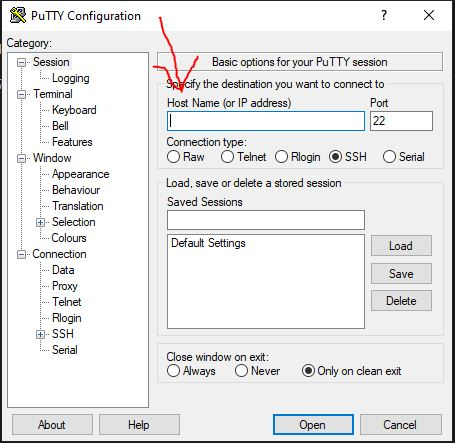

Οδηγίες Εγκατάστασης PuTTY
Το πρόγραμμα αυτό είναι εξαιρετικά χρήσιμο εργαλείο για την απομακρυσμένη σύνδεση σε έναν άλλον υπολογιστή
Για την εγκατάσταση
Ανάλογα το λειτουργικό σύστημα που χρησιμοποιείτε, πατήστε στον αντίστοιχο σύνδεσμο και θα ξεκινήσει αυτόματα το download.
Ανοίξτε το αρχείο που θα κατέβει και στην συνέχεια θα ανοίξει ένα παράθυρο. Εκεί επιλέξτε "Next". Στην επόμενη οθόνη επιλέξτε το folder που θέλετε
να εγκατασταθεί το πρόγραμμα και μετά "Next". Στην επόμενη οθόνη πατήστε "Install". Όταν τελείωσει η διαδικασία, πατήστε "Finish".
Όταν ανοίξετε το πρόγραμμα αυτό θα σας εμφανιστεί ένα παράθυρο. Στην επιλογή "Host Name (or IP address)"
πληκτρολογείτε έναν από τους παρακάτω υπολογιστές του εργαστηρίου της σχολής: linux_lab_machines

Ύστερα πατάτε Enter ή το κουμπί "Open". Την πρώτη φορά (για κάθε υπολογιστή), μαζί με το terminal θα ανοίξει κι άλλο ένα παράθυρο,
στο οποίο πατήστε "Yes".
Στη συνέχεια, στο τερματικό πληκτρολογήστε το username σας (σας δόθηκε από την γραμματεία), το οποίο είναι της μορφής sdi2000XXX
και μετά πληκτρολογήστε το password σας (Προσοχή, δεν θα εμφανίζεται τίποτα. Γράψτε το ολόκληρο και πατήστε Enter).
Συνδεθήκατε στον λογαριασμό σας σε έναν υπολογιστή της σχολής!